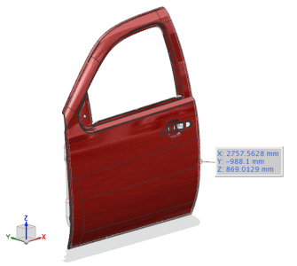
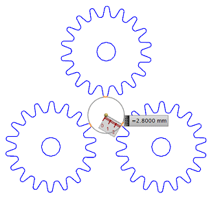
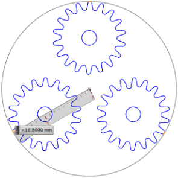

Use the Measure Extremes command to calculate the farthest 3D point from the global origin relative to three directions, or maximum or minimum 2D radius and angle measurements on planar geometry.
You can calculate:
The extreme point within a set of objects, by providing a maximum of three reference vectors.

The point at a minimum or maximum radial distance within a set of 2D coplanar objects, from a reference point and along a given reference vector.

The point at a minimum or maximum angle within a set of 2D coplanar objects, from a reference point and along a given reference vector.

The minimum or bounding radius to circumscribe a circle surrounding the 2D coplanar set of objects.

|
Example |
You can use the Measure Extreme command to calculate the overall size of the part that must be packaged by finding the maximum openings between the objects. |
|
Menu |
Analysis→Measure Extremes |